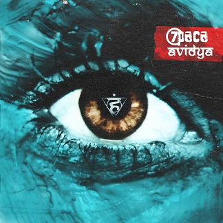

Сергей «Чупэ» Метель: «Погружаться в своё творчество одному и ни с кем его не делить»
06.06.2020Основатель сольного проекта «Метель» и группы «Смех» Сергей Метель в эксклюзивном интервью Охтинскому пресс-центру рассказал о творчестве, распорядке дня, своих татуировках, новых песнях и клипе и многом другом.
— Одно время ты играл на барабанах в группе «ГВАLТ». Скажи, пожалуйста, как ты туда пришёл и что сейчас с этой группой?
— Пришёл я туда очень давно. Было всё так: сижу я у друзей на дне рождения, вечером звонит мне гитарист «ГВАLТа» Габир и говорит: «Чувак, ты играешь на барабанах». А я сам научился играть на барабанах и играл на них во многих командах для того, чтобы прокачаться и играть лучше. Было время, когда я играл одновременно в шести-семи группах — никаких серьёзных проектов не было, но я везде играл, и мне нравилось. И Габир меня попросил подменить их барабанщика, потому что тот то ли связки потянул на футболе, то ли ещё что, в общем не мог играть, а у них был концерт в городе Реутов. Я сказал, что попробую. Я вообще в таких моментах никому не отказываю, особенно знакомым, тем более из Истры.Мы порепетировали, сыграли три песни. Это был лучший концерт группы, после него я им сказал: «Пацаны, я хочу с вами играть». Мы ждали весь день и выступали последними — это был слёт непонятных групп, куда «ГВАLТ» каким-то образом пригласили. Мы не были хедлайнерами, просто так получилось, что играли в самом конце, народу особо не было.
Мы порепетировали, сыграли три песни. Это был лучший концерт группы, после него я им сказал: «Пацаны, я хочу с вами играть». Мы ждали весь день и выступали последними — это был слёт непонятных групп, куда «ГВАLТ» каким-то образом пригласили. Мы не были хедлайнерами, просто так получилось, что играли в самом конце, народу особо не было.
На обратной дороге я им сказал: «Пацаны, это лучшее, что со мной происходило, я хочу участвовать в вашей группе». Так всё началось. Мы просуществовали пять лет, потом ещё на пять лет взяли паузу, потому что меня якобы выгнали из этой группы. И тогда, спустя пять лет, я понял, что мне нужна какая-то отдушина, и собрал пацанов обратно, хоть и не должен был, потому что меня оттуда «попросили». Мы начали играть дальше, делали, кстати, неплохие EP-шки, всего их у нас было три. На данный момент всё закончилось, но не из-за меня. Говорить, что и как произошло, я не буду, потому что из избы сор не выношу. Но пока группа «ГВАLТ» стоит на очень прочном ручном тормозе.
— Ты сейчас пишешь песни и поёшь как в группе «Смех», так и в сольном проекте «Метель». Не боишься творческого перегруза? Как справляешься с двумя группами?
— Нет, не боюсь, мне, наоборот, нравится. Я сделал проект «Метель» для того, чтобы погружаться в своё творчество одному и ни с кем его не делить. Группа «ГВАLТ» сейчас стоит на паузе и не факт, что из неё выйдет, но мне нужно было чем-то заниматься. Я просто взял в руки гитару и начал играть песни. Понял, что это вполне лирично и подумал: почему бы мне не сделать проект одному? Сначала, конечно, хотел кого-то привлечь чтобы мы были вдвоём, а потом подумал: зачем устраивать балаган, когда я могу петь один, играть один, думать один и никого не слушать, не возить и не кормить, — например, тур-менеджеров? Поэтому мне очень удобно: я знаю, что сочиняю для «Смеха», примерно понимаю, что сочиняю в «Метель», и это две совершенно разные отрасли, но и та, и другая мне в кайф. Более того, некоторые песни, которые изначально попадали в «Метель», мы делали в «Смехе», и звучало тоже неплохо. Так что, одно другому не мешает, наоборот, дополняет. «Смеха» в акустике никогда не будет, а вот «Метель» в электричестве быть может.
Группа 7Раса выпустила новый альбом «Avidya»
Зеленый свет поколению Гарри Поттера